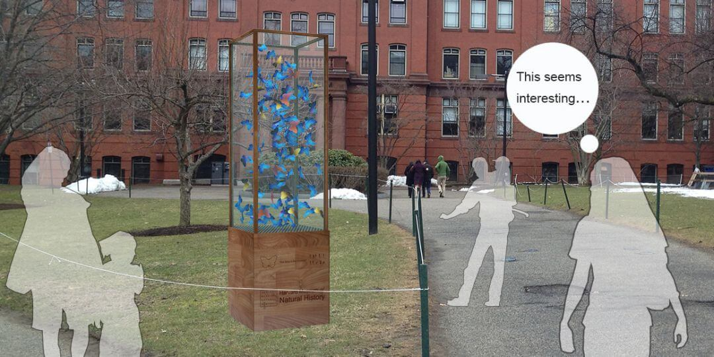

Math Whittaker
Computational Design Portfolio
Filter By Software
Flow Form Jewelery
Softwares: 

The flow form jewelry was developed based on vector fields on a 3D Triangular mesh. This work initially developed from testing the LionFish plugin I developed for Grasshopper, the plugin exposes various ways to generate and manipulate vector fields on a mesh and then simulate particles flowing across the surface of the geometry based on the vector field. These pieces were produced by initially producing the smoothest boundary aligned vector fields on each starting geometry and then using curves I drew on the surfaces in Rhino to manipulate the vector fields. Then particles were randomly positioned over the shape and simulated for 1000 steps which gave me a curve for each starting point showing their path over the surface. From this I used volumetric modelling techniques to create a 3D mesh which could then be 3D printed in various materials. In the case of the bangle the model was printed in wax and the lost-wax cast into brass and plated in rose gold .


CoTree Jewelery
Softwares:
Cotree Jewelry was created through the LionFish plugin I developed for Grasshopper which includes an implementation of the Cotree algorith by Keenan Crane. This algorithm produces two different tree structures, one is based on the initial triangle mesh you feed into the algorithm and the other is produced from the dual of the initial mesh. The algorithm asks for an initial growth point and then iterates through each face of the Half-edge Mesh structure to select edges which when joined back together either create the leaf vein structure shown below or a hexagonal based structure. As a tool for creating patterns this algorithm is not only incredibly efficient but also combines the natural aesthetic we are often drawn to with a high level of organisation and complexity which can be achieved with computational design techniques.
Link: CoTree algorithm Paper

Particle Physics Table
Softwares:
This project was created as my final project for my BA 3D Design. The Piece was inspired by diagrams from bubble chambers which are an instrument formerly used in particle physics to track the movements of subatomic particle. I started off by simulating a group of protons in a magnetic field and tracking their paths to generate patterns. This simulation had many different parameters including the field strength,polarity and decay rate which could be altered almost indefinitely, this meant that there could be an almost infinite number of patterns .Some Patterns would prove more useful for the as a coffee table than others so I used an solver to iterate through designs and find ones with the best properties for creating a coffee including stability and flat top. The form was then into parts which once assembled would lock in place take high level of weight (60kg +).After this the glass was placed on, the top matches the flat profile of the as well as intentionally lookin precarious and to match the state of many subatomic particles


Parametric City Plan
Softwares:
Whilst studying for my Masters of Design at Harvard University one project tasked us with designing a city. To do this I started off by dividing the plot into different site specific zones using a voronoi diagram. Then designed the rode networks by creating a rectangular grid in each zone and then simulating the grid as a spring system in order to maximise the efficiency of the road networks. I took the lots that were left as a result and designated their functoin based on their area, smaller plots became high rise structures where as larger plots were either shorter buildings or public parks. Finally the High rise buildings were then modified using sunlight analysis to insure their shadows wouldn't cause large dark areas in the proposed city.
×
3D Printed Architectural Pillar
Softwares:
I created this project whilst studying for my Masters at Harvard University. The initial concept was to look at producing architectural elements using an experimental ceramic 3D printer. The main limitation for this project was the scale of the 3D printer which was limited to producing objects of 25cm x 25cm x 30cm. To overcome this limitation the design was broken into 16 individual parts which were printed in terracotta and then stuck back together before being fired. The geometry was developed in grasshopper drawing inspiration from the work of Antoni Gaudí. The size limitation meant that many of the parts deformed differently through the firing stage however the overall designed geometry was maintained and can be seen here in the pieces


Radiolaria Lampshade
Softwares:
This piece was created during the second year of my BA 3D Design at Manchester School of Art. The inspiration for this piece was looking at the exoskeletons of the marine creature Radiolaria. RadioLarians are microscopic marine animals which create beautifully intricate skeletons around themselves out of silica, these skeletons are intentionally porous to allow food to enter whilst also protecting them. I studied the geometries found in various species of radiolaria before writing a script in Grasshopper to produce patterns, wrap the pattern onto a geometry and then smooth the result. This form was then 3D printed in Nylon through SLS. The result was a beautiful geometry which cast intricate shadow patterns.
×
Solenopsis
Softwares:
This range of jewlery was designed using Swarm based simulations. These 'swarms' were trained to mimic the behaivor of ants searching for food sources, hense the ranges name Solenopsis which is the latin name of a Genus of ants including fire ants. The algorithm I wrote could be applied to any jewlery without any changes other than scale and 'world' geometry. This work was then 3D printed in silver or steel to produce the finalized peices.


Kuka Standing Seam Panels
Softwares:
This research was done at a private firm where I was tasked with trying to create doubly curved metal elements using a Kuka robot and a custom built mdf vacuum mold. The purpose of this project was to look into the ability of making custom shapes for standing seam roofing techniques through a much faster and more controlled method than is traditionally used .
Tesseract
Softwares: 

This video shows a projection of a 4-Dimensional cube (Tesseract) rotating around its center. The image we see is a projection of the 4D shape into 3-Dimensions. This was written in Java and was an experiment to develop my understanding of higher dimensional shapes. The reason for my interest in higher dimensional geometry comes from an interesting property of higher dimensional space. This property is that there is more “space” the best way to illustrate this is the fact that if you imagine a unit circle inscribed in a cube such that it touches each of the squares edges and then compare the areas of the circle to the rectangle the circle fills ~78% of the squares area. If you then create the same setup in 3D with a sphere and a cube the sphere fills only ~52% of the cubes volume, as you keep increasing dimensions the percentage of the space in the cube that the sphere fills gets smaller and smaller converging towards 0% at infinity. This property can be very powerful in computational design for example, transformations that cause intersections in 3D might not in higher dimensions once you have finished the operations you need you can then project the form back down to 3D without ever creating the intersection issues you would have had if you just work in 3D
Sound Tiles
Softwares:
This project was an experiment in the idea of using music to develop geometry. Within the video below the starting geometry, a flat square mesh, was chosen as I was interested in using the geometries to create ceramic tiles. This would then allow for the colors shown in the simulation to be applied to the physical object through glazing techniques. The initial mesh was carefully developed to have an equal number of vertices as the frequencies I was extracting from the music. Then each vertex was moved in the z-axis by a distance proportional to the volume of it’s corresponding frequency
Topological Furniture Study
Softwares:
This was a research project I conducted at MIT whilst studying for my Masters. I was researching a method to minimise the amount of material used in furniture construction, as the furniture industry contributes a huge amount to landfill through end of life disposal and even more in the fast fashion away culture. To do this I used a technique called Topological Optimization in order to design minimal structure which also had an interesting aesthetic. To implement this technique I wrote an algorithm in Grasshopper, also using Milllipede. Part of the interest of this research was also looking at how this technique could be used as a design technique rather than the traditional use it has in engineering. I found that there were many ways in which one could manipulate the simulations in order to influence its aesthetics which gave the tool an interesting design aspect whilst also ensuring the designs used the minimum amount of materials.


Robotic Ceramic Glazing
Softwares:
This research was looking at the robotic application of oxides or glazes for ceramics. I was inspired for this project from previously working with ceramic artists who were highly skilled in decorative oxide and glaze effects. I felt it was interesting that through mass manufacturing this previously important aspect of ceramics had either been lost or condensed down to the simple patterns which can be created using stencils. By using a 3D scanner to obtain an accurate representation of the object I was then able to design patterns through Grasshopper and turn these patterns into tool paths. These toolpaths included returning to stations to reapply the oxides to the brush.


Museum Interactive Art
Softwares: 

This was a interactive design to convey how busy the museum was to those outside. The musuem has a large collection of butterflys so I chose to fill the chamber with plastic butterflys which were then blown to 3 different levels within the enclosure based on how busy the museum was at the time. The fans were controlled by a Proton board which I coded to communicate with another Proton board at the entrance which would count the number of people entering or leaving the museum

×
Photography Manipulation
Softwares: 
During a class taken at MIT I looked into how one could use images and computational techniques in parallel to make art. The first image was looking at trying to distort a triangular grid based on the features in a photo. This created an image reminiscent of the facial recognition techniques, which when combined with the combination of the subject of the photo was unaware this effect was going to be applied afterwards aims to comment on societies acceptance of intrusive technologies.
For the second image I was struck by how wasteful we all have become with photography when compared with the preciousness of film photography. As such, rather than wasting images I wrote code to analyse each of the images based on its average brightness and then rearrange these images into a pattern. As can be seen the darkest images follow an 's' shaped curve going from the top left to the bottom right with the images further away from this curve getting brighter.
The third image was a commentary on social media such as instagram or pinterest whose platforms rely on their users creating content for them to be engaging. As such I took a selection of black and white images and then wrote code in Java to break each of those images down into its individual pixels and then try to reorganise them all into the instagram logo . The idea was to show that these system are made by us
Finally The video illustrates a technique I developed to make the photo editing process far more physically engaging. When taking photographs I was struck by how physically involved this process was for example having to crouch and twist your body to get the correct angle, whereas when editing photographs with image processing softwares you are very static just sitting moving a mouse. In response to this I developed a software which when combined with a Xbox Kinect camera would allow you to control the "brush" with your hand in 3D. This process would force you to move not only your arm but also crouch and walk around to be able to edit the photo.
×